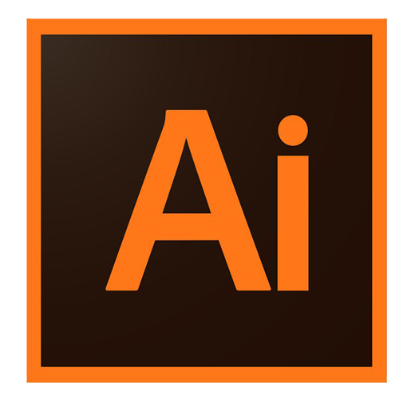
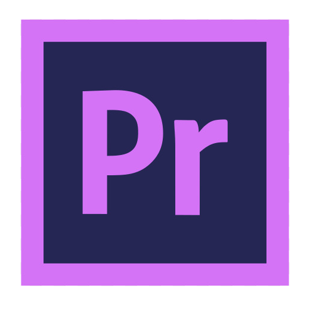

Mes compétences
Programmations

Adobe


Le premier site que l'on devait faire dans mon DUT MMI en première année. Une simulation de site vitrine.
Le voirUn site vritrine que j'ai codé fin 2019, il avait pour but de réunir mes loisirs de streaming aux même endroit.
Le voirLe site de mon projet tutoré de première année. Nous étions un groupe de six étudiants pour faire un festival (fictif) de quatres jours de façon à rassembler tous les genres de musiques. Un jour, un genre. Tout était à faire, la communication, la publicité (pour les compétences audiovisuelles), ainsi qu'un site fonctionnel en 15 jours. Nous avions eu 18/20.
Le voir
Mon deuxième projet tutoré. Il avait pour but de présenter un évènement d'astronomie fictif qui ce serait passer à La Coupole à Wizernes.
Le voirUn site que j'ai fait qui m'a servi d'entaînements pour faire du Javascript. C'est une to do list assez simple, qui permet de faire sa liste de choses à faire.
Le voirUn jeu Tic Tac Toe (en 4x4) codé en Javascript fait en groupe.
Le voir